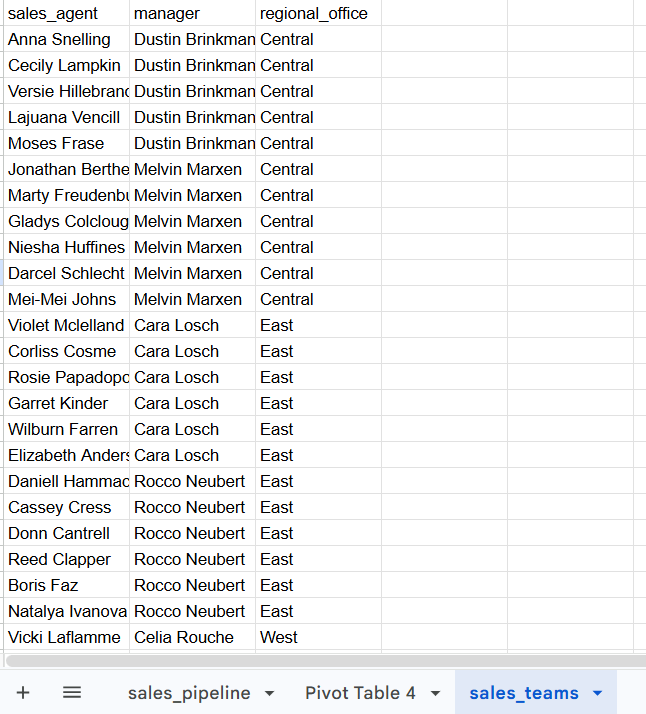
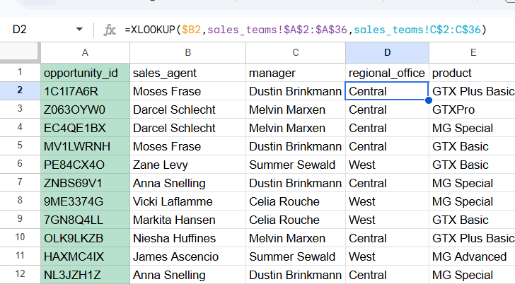
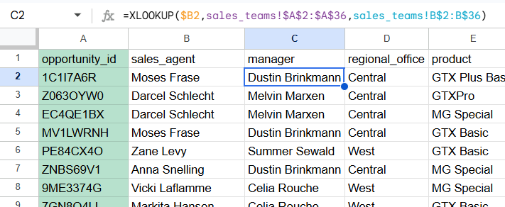
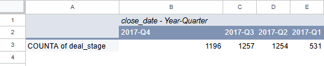
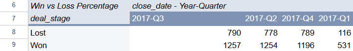
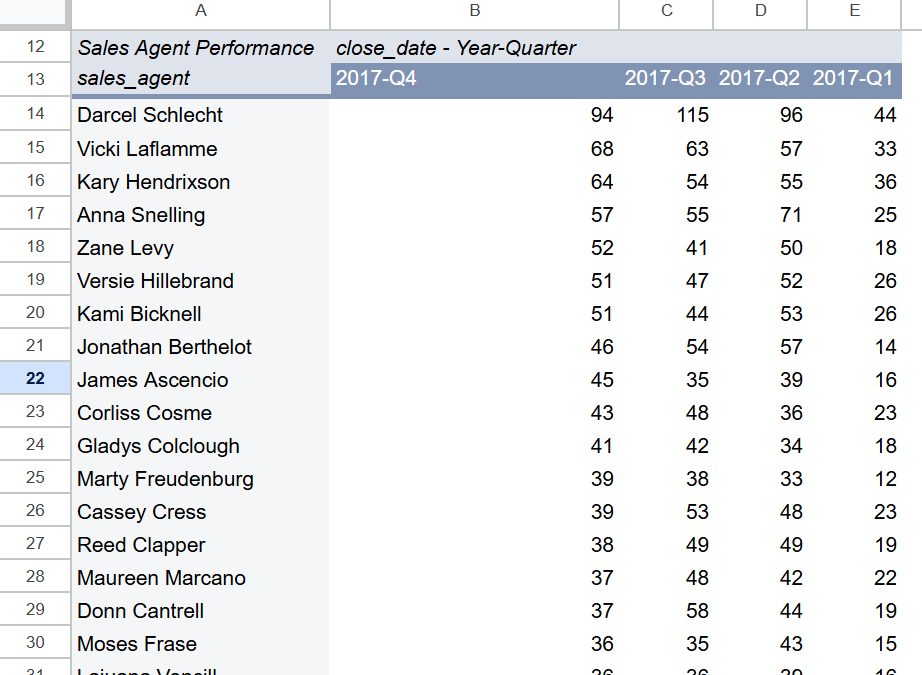
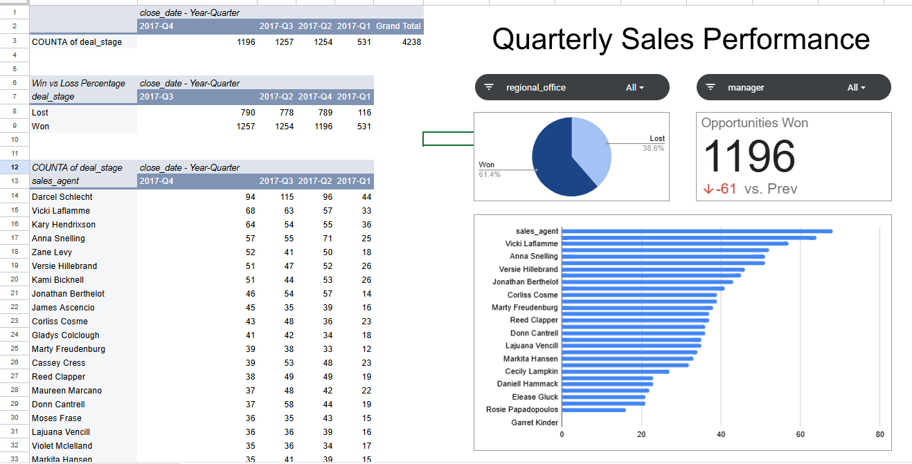

Project Overview
Authorship
Nibal Sharrouf performed this analysis in March 2026 as a guided project from Maven Analytics. The analysis used Google Sheets to explore B2B sales pipeline data from a fictitious computer hardware company. The goal is to help sales managers track quarterly performance and understand how sales opportunities progress through the pipeline.
Project Scope
Using Google Sheets, the data was cleaned, joined, and analyzed using pivot tables before building an interactive dashboard that allows managers to monitor sales performance and compare results across quarters, sales agents, and regional offices.
1. Business Task
Objective
The objective of this project is to build a dashboard that helps sales managers answer key questions such as:
- How many sales opportunities were won each quarter?
- What percentage of opportunities were won versus lost?
- Which sales agents are performing the best?
- How does performance vary across managers and regional offices?
By answering these questions, managers can identify high-performing agents, monitor sales trends, and improve overall team performance.
2. Data Source
The dataset comes from Maven Analytics Guided Project — CRM Sales Opportunities.
It contains two tables with approximately 8,800 sales opportunities:
Sales Pipeline Table
| Field | Description |
|---|---|
| opportunity_id | Unique identifier for each sales opportunity |
| sales_agent | Name of the sales agent |
| product | Product being sold |
| account | Customer account name |
| deal_stage | Won, Lost, or Engaging |
| engage_date | Date of initial engagement |
| close_date | Date deal was closed |
| close_value | Value of the closed deal |
Sales Teams Table
| Field | Description |
|---|---|
| sales_agent | Name of the sales agent |
| manager | Agent's manager |
| regional_office | Regional office location |

3. Data Preparation
Before building the dashboard, the data was prepared and validated.
Preparation Steps:
- Inspecting the dataset to understand structure and fields
- Checking for missing or inconsistent values
- Converting text dates into proper date format
- Creating a Year-Quarter field for time analysis
- Joining the sales pipeline table with the sales team table using XLOOKUP to add regional_office and manager
Adding regional office information using XLOOKUP to join tables.

Adding manager information to the sales pipeline data.

This preparation ensured the dataset was ready for analysis and visualization.
4. Data Analysis
Pivot tables were created to explore the sales pipeline and identify key trends.
Analysis of won opportunities broken down by quarter to track performance over time.

Percentage breakdown of deals won versus lost in the most recent quarter.

Top-performing sales agents ranked by opportunities won.

5. Interactive Dashboard
A dynamic dashboard was created in Google Sheets to visualize the key insights.
Scorecard
Displays the number of opportunities won in the most recent quarter and compares it with the previous quarter.
Pie Chart
Shows the percentage of deals won vs lost in the most recent quarter.
Bar Chart
Shows the top-performing sales agents based on opportunities won.
Interactive Filters
Slicers allow managers to filter the dashboard by Manager and Regional Office.
The final interactive dashboard includes all visualizations with slicers for dynamic filtering by manager and regional office.

6. Conclusion
The analysis of the CRM sales pipeline provided valuable insights into the sales team's quarterly performance. By cleaning and preparing the dataset and using pivot tables and visualizations in Google Sheets, it became easier to track how opportunities move through the pipeline and identify trends in sales outcomes.
The dashboard highlights key performance indicators such as:
- Opportunities won — tracking quarterly performance
- Win versus loss percentages — understanding conversion rates
- Top-performing sales agents — identifying best performers
With the use of interactive filters for managers and regional offices, sales managers can quickly explore performance across different teams and time periods, helping them make more informed decisions and improve overall sales effectiveness.
This dashboard enables data-driven sales management, allowing teams to focus on what works best and optimize their sales pipeline for better results.